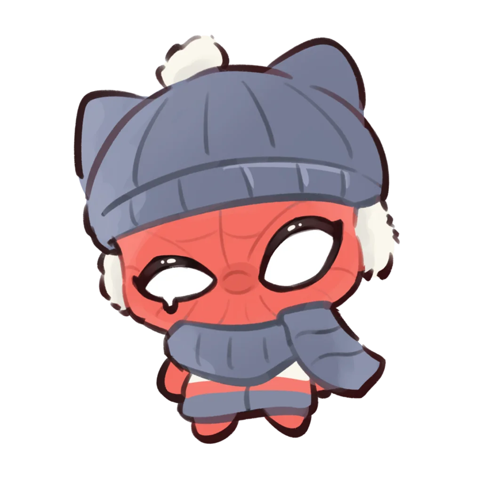

等待下一次工具调用
0 条记录
Peter还没有工具或自主活动记录。
还没有记录。
还没有便签。
正在读取 Ombre 记忆…
点上面一条记忆查看内容。
把日子留在这里，之后还可以一起翻阅。
聊天、QQ 和邮件用这个，下一句开始生效。
自主活动单独用这个 API 模型；没有单独选择时跟随聊天模型。
多轮搜索、阅读和记忆查询交给单独模型；只读工具，费用计入共享上限。留空可关闭。
瞄一眼只用这个模型，聊天不受影响，下一次瞄一眼开始生效。
Ombre 给记忆打标签、整理短期便签用这个。换了以后，完全退出 Peter 再打开才生效。
还没有添加接口。
想添加的软件，先在电脑上打开它，再点「添加」。
单独调整页面
尚未选择图片
Peter 也可以直接拖动四角调整大小，人物比例会保持不变。
服务状态：正在连接…